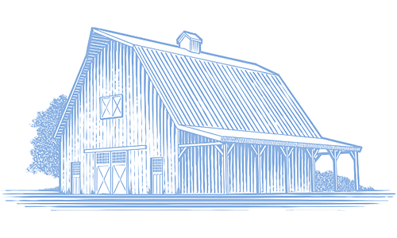
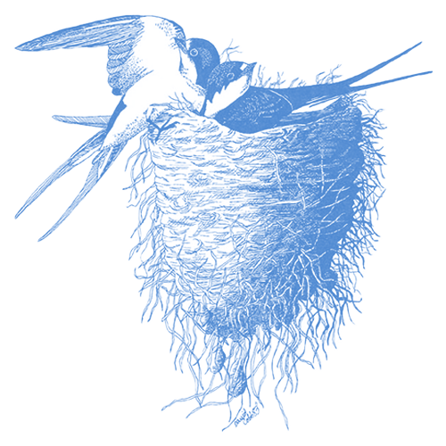

Glistening cobalt blue above and tawny below, Barn Swallows dart gracefully over fields, barnyards, and open water in search of flying insect prey. Look for the long, deeply forked tail that streams out behind this agile flyer and sets it apart from all other North American swallows. Barn Swallows often cruise low, flying just a few inches above the ground or water. True to their name, they build their cup-shaped mud nests almost exclusively on human-made structures.
Flies of all types make up the majority of the Barn Swallow’s diet, along with beetles, bees, wasps, ants, butterflies, moths, and other flying insects. Barn Swallows usually take relatively large, single insects rather than feeding on swarms of smaller prey. They will also pick up grit and small pebbles, or eggshells and oyster shells set out by humans, which may help the birds digest insects or add needed calcium to the diet.
Barn Swallows forage in open areas throughout most of the continent, including suburban parks and ball fields, agricultural fields, beaches, and over open water such as lakes, ponds and coastal waters. They range from sea level up to 10,000 feet. Breeding habitat must include open areas for foraging, structures or cliffs to build nests on, and a source of mud such as a riverbank to provide the material for building nests.
Barn Swallow pairs explore a number of potential nesting spots, flying up and hovering to investigate a location, then moving to another site before narrowing their choice. Preferred sites include eaves, rafters, and cross beams of barns, sheds and stables, as well as the undersides of bridges, wharfs, and culverts. They may also use nests from previous years, but avoid those infested heavily with mites or other parasites.
Both male and female build the nest cup using mud. They collect mud in their bills and often mix it with grass stems to make pellets. They first construct a small shelf to sit on, then build up the nest’s sides. If built against a wall or other vertical surface the result is a semicircular, half-cup shape. Nests built on top of a beam or other horizontal surface form a complete cup about 3 inches across at the rim and 2 inches deep. The birds line the cup first with grass, then feathers, and in colonies may steal nest-lining materials from neighboring nests. When reusing nests, Barn Swallows clean out old feathers and add new mud to the nest’s rim.